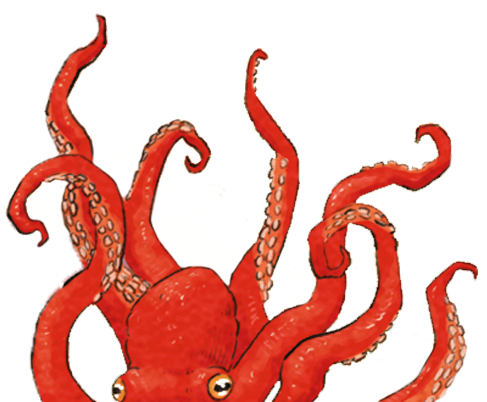
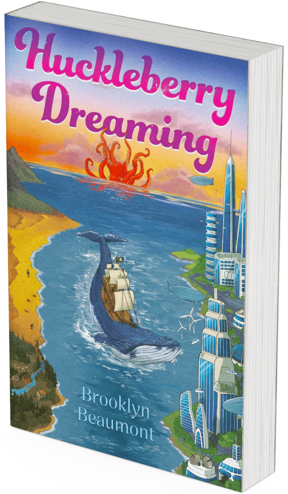
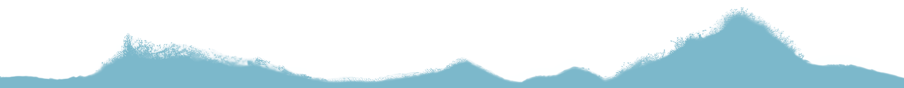

Huckleberry Dreaming
Out now!
A Mind-Bending Coming-of-Age Tale where Memory, Identity, and Retro-Dystopia Collide
Carney Caldwell wakes in a hospital with no memory of the violent act he’s accused of committing. As he navigates a world split between retro Americana and high-tech cities, he must untangle his fractured past, reclaim his identity, and uncover a truth that has eluded everyone he knows.
About Huckleberry Dreaming
Brooklyn Beaumont makes a striking debut with Huckleberry Dreaming—a genre-bending sci-fi tale where fractured memory and authoritarian control shape a young man’s search for truth.
Set on a planet split between nostalgic 1950s Americana and high-tech surveillance, Beaumont’s world is as eerie as it is familiar. Fans of S.E. Hinton, Orwell, Bradbury, and Black Mirror will feel right at home in this retro-dystopian landscape, where the past and present blur, and reality itself is up for debate.
At the heart of the story is Carney Caldwell, an eighteen-year-old pacifist who wakes in a hospital with no memory of the violent act he’s accused of committing. As he grapples with a surreal new therapy and the shifting terrain of his mind, he’s drawn into a parallel tale that mirrors his own, forcing him to question everything he thought he knew about his planet, his past, and his identity.
Beaumont’s seamless blend of retro-futurism and immersive world-building places small-town diners and gang jackets alongside mind-altering treatments and totalitarian oversight. With humour and heart shining just as brightly as the story’s strange, futuristic twists, Huckleberry Dreaming offers sci-fi enthusiasts more than mere adventure and gadgets. Sharp wit and timely themes make this standout novel resonate with readers who crave emotional depth and philosophical intrigue. Huckleberry Dreaming is as unsettling as it is compelling—a coming-of-age story for those who prefer their fiction bold, brainy, and beautifully off-kilter.

About the author
Brooklyn Beaumont is a published academic author, a senior software engineering manager, and a former robotics researcher. She lives in Nottingham with her son, Charlie, and her dog, Hachiko, and can be found playing the electric guitar in her spare time. Her writing blends technical insight with emotional depth, drawing on her lifelong love of dystopian fiction and Brat Pack cinema.